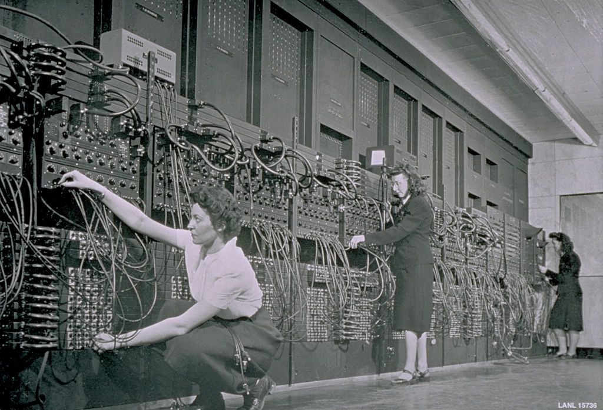
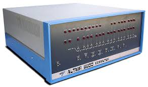
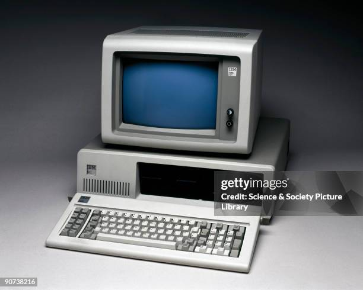
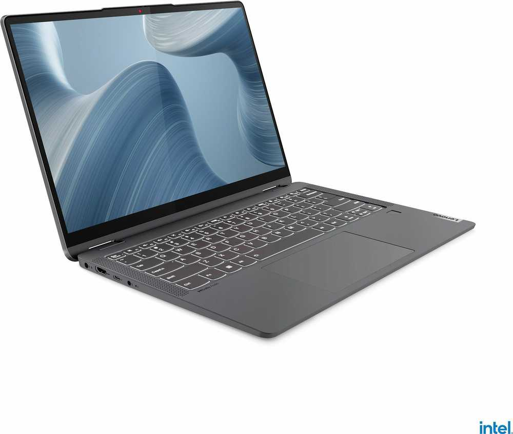

Nuo skaičiuotuvo iki superkompiuterio
Kelionė per kompiuterių istorijos vingius
Laiko Juosta
Kompiuterių Istorija
1940-ieji
ENIAC – pirmasis elektroninis kompiuteris, naudojęs vakuumines lempas. Buvo milžiniškas, lėtas ir labai neefektyvus, tačiau padėjo pagrindus šiuolaikiniams kompiuteriams. Nors jo dydis ir energijos suvartojimas buvo didžiuliai, ENIAC atliko svarbų žingsnį kompiuterių technologijų vystymesi, leisdamas atlikti sudėtingus skaičiavimus daug greičiau nei ankstesnės mechaninės mašinos. Jo sukūrimas taip pat paskatino tolesnius tyrimus ir inovacijas, vedusius prie tranzistorių ir integruotųjų grandynų atsiradimo, kurie galiausiai padėjo sukurti kompaktiškesnius ir efektyvesnius kompiuterius.
1970-ieji
Altair 8800 – pirmasis asmeninis kompiuteris, kurį galėjo įsigyti entuziastai. Nors neturėjo ekrano ar klaviatūros, jis įkvėpė tokias įmones kaip Apple ir Microsoft. Altair 8800 buvo pagrindinis kompiuteris, kuris pasiekė namų vartotojus, ir tapo svarbiausiu šaltiniu, vedusiu į asmeninių kompiuterių revoliuciją. Jo atviroji architektūra suteikė galimybę kūrėjams kurti programas ir plėtinius, taip prisidedant prie kompiuterių programinės įrangos plėtros ir populiarėjimo.
1980-ieji
IBM PC – kompiuteris, sukūręs pramonės standartą. Jis tapo pagrindiniu verslo ir namų įrankiu, o jo architektūra naudojama iki šiol, formuodama kompiuterinės pramonės pagrindą ir įtakojant kompiuterių dizainą bei veikimą. IBM PC pritaikyta sistema tapo universaliu sprendimu, kuris sudarė sąlygas kitų gamintojų kompiuteriams, naudoti tą pačią architektūrą, o tai paskatino didelę konkurenciją ir greitą technologijų pažangą.
Šiandien
Šiuolaikiniai kompiuteriai yra itin galingi, kompaktiški ir mobilūs. Nešiojami kompiuteriai, planšetės bei debesų kompiuterija leidžia atlikti sudėtingas užduotis bet kur, užtikrindami aukštą našumą ir patogumą. Dėl nuolatinės technologijų pažangos, šie įrenginiai ne tik atlieka kasdienes užduotis, bet ir suteikia galimybę dirbti su sudėtingais duomenimis, kurti ir redaguoti turinį, taip pat pasiekti įvairias paslaugas bei programas internetu. Augantis duomenų apdorojimo greitis, patobulėjusi baterijų technologija ir aukštos raiškos ekranai suteikia galimybę dirbti efektyviau, bet kur ir bet kada. Be to, debesų kompiuterijos paslaugos leidžia lengvai dalintis duomenimis ir bendradarbiauti realiuoju laiku, nepriklausomai nuo geografinės vietos.
Evoliucijos Etapai
Lempos
Pirmoji karta (1940-1956) - vakuuminės lempos atliko skaičiavimus, tačiau jos buvo neefektyvios, karštai veikė ir dažnai perdegdavo. Kompiuteriai buvo dideli ir lėti.
- Pirmieji kompiuteriai: Pirmieji kompiuteriai, tokie kaip ENIAC ir UNIVAC, naudojo vakuumines lempas savo skaičiavimams.
- Moksliniai tyrimai: Šie kompiuteriai buvo naudojami moksliniuose tyrimuose, siekiant atlikti sudėtingus skaičiavimus, kuriuos žmonės atlikti negalėjo.
- Kariniai tikslai: Pirmieji kompiuteriai buvo naudojami ir karinėse srityse, pavyzdžiui, šifravimui ir raketų balistiniams skaičiavimams.
Tranzistoriai
Antroji karta (1956-1963) - tranzistoriai pakeitė vakuumines lempas, leidžiant sumažinti kompiuterių dydį ir padidinti jų patikimumą bei greitį.
- Kompiuteriai: Tranzistoriai pakeitė vakuumines lempas, leidžiant kurti mažesnius ir greitesnius kompiuterius.
- Elektronika: Tranzistoriai tapo pagrindiniu komponentu ne tik kompiuteriuose, bet ir kituose elektroniniuose prietaisuose, tokiuose kaip radijo imtuvai, televizoriai ir kiti prietaisai.
- Telekomunikacijos: Tranzistoriai pagerino signalų apdorojimo greitį ir patikimumą telefonų bei radijo sistemose.
- Pramonė: Dėl tranzistorių kompiuteriai tapo mažesni ir labiau prieinami, todėl jie pradėjo plačiai naudoti pramonėje, valdymo sistemose ir kitose srityse.
Integrinės Schemos
Trečioji karta (1964-1971) - integrinės schemos leido kurti dar mažesnius ir spartesnius kompiuterius. Atsirado modernios operacinės sistemos ir programavimo kalbos.
- Kompiuteriai: IC naudojimas leido sukurti kompaktiškesnius ir galingesnius kompiuterius.
- Mobilieji įrenginiai: Integrinės schemos tapo pagrindiniais komponentais išmaniųjų telefonų, nešiojamųjų kompiuterių ir kitų prietaisų kūrime.
- Modernios operacinės sistemos: IC technologijos padėjo sukurti greitesnes ir veiksmingesnes operacines sistemas.
- Programavimo kalbos: Integrinės schemos prisidėjo prie programavimo kalbų vystymosi, leidžiančio kurti galingesnes ir lankstesnes programas.
Mikroprocesoriai
Ketvirtoji karta (1971-dabar) - mikroprocesoriai pavertė kompiuterius kompaktiškais ir prieinamais visiems. Šiandien jie yra pagrindinė visų skaičiavimo įrenginių dalis.
- Kompiuteriai: Mikroprocesoriai leidžia kompiuteriams atlikti skaičiavimus ir valdyti įvairias programas.
- Išmanieji telefonai: Ši technologija užtikrina, kad telefonai būtų kompaktiški, tačiau su dideliais skaičiavimo pajėgumais.
- Automobiliai: Mikroprocesoriai naudojami automobilių valdymo sistemose, pagerindami saugumą ir efektyvumą.
- Namų apyvokos prietaisai: Mikroprocesoriai valdo įvairius įrenginius, tokius kaip šaldytuvai, skalbimo mašinos ir kt.
Ateities Perspektyvos
Kvantiniai Kompiuteriai
Kvantiniai kompiuteriai žymi naują kompiuterijos revoliuciją. Panaudojant kubitus, šie įrenginiai gali atlikti kelis uždavinius vienu metu, gerokai padidindami apskaičiavimo greitį ir tikslumą. Dėl šios savybės kvantiniai kompiuteriai gali išspręsti problemas, kurios yra pernelyg sudėtingos net galingiausiems šiuolaikiniams kompiuteriams. Kvantinių kompiuterių pritaikymas galėtų pagerinti dirbtinį intelektą, reikšmingai sumažinti energetinius kaštus, optimizuoti logistiką ir pagerinti duomenų saugumą, taip pat paspartinti naujų medikamentų kūrimą. Ateityje šie įrenginiai gali tapti pagrindiniais sprendimų priėmimo įrankiais moksliniuose ir komerciniuose sektoriuose.
Dirbtinis Intelektas
AI vystymasis leidžia kompiuteriams mokytis, analizuoti ir priimti sprendimus savarankiškai, taikant juos medicinoje, finansuose ir kituose sektoriuose.
- Medicinoje: AI padeda anksti diagnozuoti ligas ir teikti personalizuotas gydymo rekomendacijas.
- Finansų sektoriuje: AI naudojamas rizikos vertinimui ir investicijų prognozėms kurti.
- Transporto srityje: Automatinės transporto priemonės ir maršrutų optimizavimas remiasi dirbtiniu intelektu.
- Marketinge: AI analizuoja vartotojų elgseną ir rekomenduoja produktus pagal jų poreikius.
- Švietimo sektoriuje: AI padeda personalizuoti mokymosi patirtį ir stebėti studentų pažangą.
Biologiniai Kompiuteriai
Ateityje kompiuteriai gali veikti naudojant DNR ar kitas biologines struktūras, kas atvertų naujas galimybes informacijos saugojimui ir apdorojimui.
- DNR kompiuteriai: DNR molekulės gali būti naudojamos informacijai saugoti ir apdoroti, sukuriant kompaktiškus ir itin efektyvius duomenų laikmenas.
- Biologiniai algoritmai: Šie algoritmai gali būti sukurti naudojant biologinius procesus, kad atliktų užduotis, kurioms tradiciniai kompiuteriai yra per lėti arba per brangūs.
- Medicinos srityje: Biologiniai kompiuteriai galėtų atlikti sudėtingas genetinių duomenų analizės užduotis, pagerindami ligų diagnostiką ir gydymo metodus.
- Ekologijos srityje: Ši technologija gali padėti analizuoti ir prognozuoti biologinius procesus, taip prisidedant prie aplinkosaugos ir klimato kaitos tyrimų.